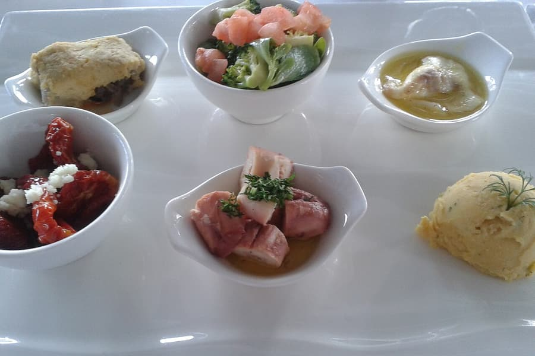
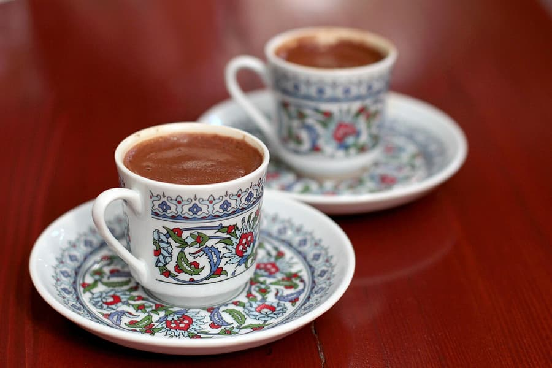
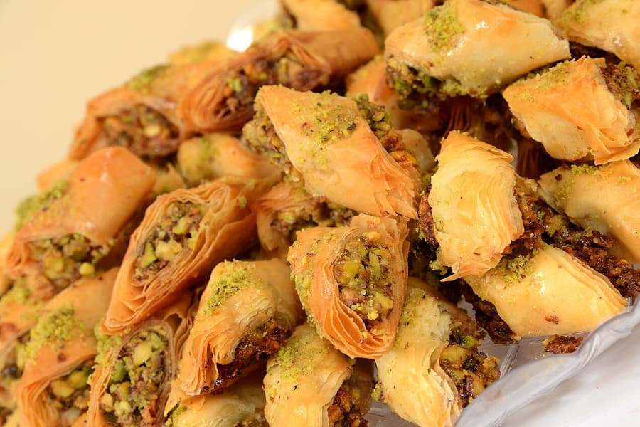

تُعدّ غلطة وكاراكوي وجيهانغير وأسمالي مسجد من أفضل أحياء إسطنبول للأكل والشرب، وكلها على مسافة قريبة سيراً من شققنا. هذه هي الأماكن التي نرتادها بأنفسنا.
المطاعم

Sur Balık Cihangir
مكان دافئ يقدّم المأكولات البحرية الطازجة والمقبّلات (المزة) الشهية، مع إطلالة رائعة على البوسفور من تلال جيهانغير.
📍 افتح في خرائط Googleالمقاهي والقهوة

الحانات والسهر
المخابز والحلويات

Ali Muhiddin Hacı Bekir
أفضل حلقوم (راحة الحلقوم) في المدينة — من أقدم صانع حلويات في تركيا.
📍 افتح في خرائط Googleأقِم في قلب غلطة
شققنا في غلطة وتقسيم وبي أوغلو على بُعد خطوات من كل ما في هذا الدليل. احجز مباشرةً وادفع أقل بنسبة 10% مقارنةً بـ Airbnb.
أدلة أخرى عن إسطنبول

✈️ كيف تصل من مطارات إسطنبول إلى غلطة وتقسيم
التاكسي وحافلات Havaist/Havabus والمترو من مطار إسطنبول (IST) ومطار صبيحة كوكجن (SAW) إلى غلطة وتقسيم وبي أوغلو — مع المدة والأسعار والخطوة الأخيرة إلى شققنا.
← اقرأ الدليل
🗼 ماذا تفعل في غلطة وبي أوغلو: دليل محلي
برج غلطة ودرج كاموندو ومتحف بيرا وإسطنبول مودرن وتشوكورجوما وغيرها — بالإضافة إلى رحلات سهلة إلى المدينة القديمة — من فريق يعيش في غلطة.
← اقرأ الدليل